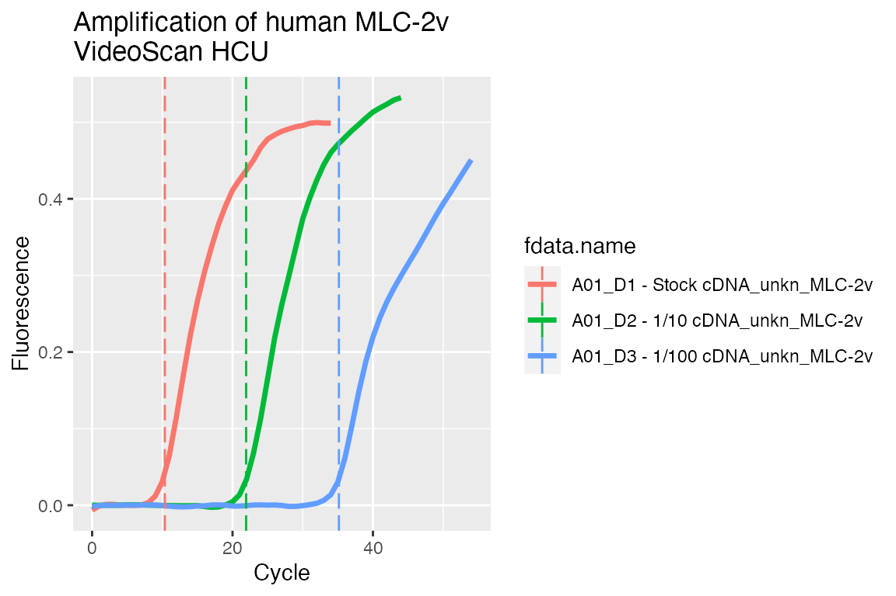

Creating RDML file from raw data
Konstantin A. Blagodatskikh, Michał Burdukiewicz, Stefan Rödiger
2017-07-23
Creating RDML file from raw data
This vignette describes important step how to create RDML object from user provided data and calculate Cq values with custom RDML class method. We use a real-world example to demonstrate the use of the RDML package.
For this purpose we used data from the VideoScan platform. The VideoScan platform is a highly versatile fluorescence microscope based imaging platform for the real-time analysis of biomolecular interactions. VideoScan has been extended by a heating/cooling-unit, which can be used for DNA melting curve analysis [@roediger_RJ_2013], real-time quantitative PCR [@roediger_highly_2013] and quantitative isothermal amplification [@spiess_impact_2014]. In this example we focus on qPCR data obtained from the amplification of the human gene mlc-2v [@sheikh_2015]. The experimental details (e.g., primer sequences, amplification conditions) are described in [@roediger_highly_2013; @george_development_2016].
In detail, this dataset contains three amplification curves collected by three runs monitored with TaqMan qPCR chemistry. Similar to other experimental platforms has the VideoScan systems an output as csv file (comma separated value). In general, csv is a format that is sufficient for an in house usage. However, the exchange with other scientists is demanding, since experimental metadata is not consistently included in csv files. These are for example information about qPCR conditions, primers, experimentalist and so on as described in the MIQE and RDML standard documentations.
All csv raw data were transferred to the R environment and stored as rda files in the C54 dataset after completion of the experiment as described elsewhere [@RDCT2010c]. The R environment provides numerous packages for the import of standard file formats, including formats from spread sheet applications (e.g., XLS, XLSX, ODS) [@Schutten_2014_ods, @Warnes_2015_gdata, @dragulescu_xlsx_2014], an ODBC connection [@ripley_rodbc_2015] or from the clipboard (read.table("clipboard")). There are several graphical user interfaces (GUIs) for R, which facilitate an easy import of raw data [@Valero_2012]. For example RKWard [@roediger_rkward_2012] has import functionality for csv, txt, spss and stata files.
We will use the C54 dataset directly from the chipPCR package [@roediger2015chippcr]. The amplification curves have different number of cycles and one of them contains a missing value due to a sensor dropout. Thus, this data should be preprocessed before Cq calculation.
R is a language with dynamic typing. This is helpful while scripting, but can lead to problematic debugging of more complicated workflows. R6 classes provide type-safe interfaces to set data without access to the inner structure of objects so that all imported data can be validated. This option is highly useful when creating packages at an intermediate level for other packages (e.g., such an approach does not permit set type character in place of type integer). Furthermore, the inheritance of R6 objects unifies the structure of the package and streamlines the extending of its capabilities (since the whole package is written around a single base class).
Initialization
First of all we have to load all necessary packages and fluorescence data into our R session.
library(RDML)
library(chipPCR)
library(MBmca)
library(ggplot2)
data(C54)We can see that our data are arranged in data.frame with cycle numbers in the first column and fluorescence values in the other columns. Such data structure is ready to use with the RDML package and does not need any conversion.
str(C54)
#> 'data.frame': 56 obs. of 4 variables:
#> $ Cycle: num 0 1 2 3 4 5 6 7 8 9 ...
#> $ D1 : num 0.141 0.146 0.152 0.151 0.153 ...
#> $ D2 : num 0.148 0.148 0.148 0.149 0.149 ...
#> $ D3 : num 0.145 0.147 0.148 0.148 0.149 ...
dat <- data.frame(Cycle = rep(C54[, 1], ncol(C54) - 1),
Experiment = unlist(lapply(colnames(C54)[-1], function(i) rep(i, nrow(C54)))),
refMFi = unlist(C54[, -1]))
levels(dat[["Experiment"]]) <- c("D1 - Stock cDNA", "D2 - 1/10 cDNA", "D3 - 1/100 cDNA")
ggplot(dat, aes(x = Cycle, y = refMFi, colour = Experiment)) + geom_point()
Creating custom method for RDML class
The preprocessing and Cq calculation steps are held within a RDML object. To do this we shall add custom method to the RDML class and use this advanced class as RDML object initializator (data import).
As described previously [@roediger2015r], we first preprocess the raw data with the CPP function from the chipPCR package. Next, these preprocessed data are stored in new runs within the same experiment. For Cq calculation we used the diffQ2 function from the MBmca [@roediger_RJ_2013] package. Note, there are other functions available within R to determine the Cq values. The qpcR package is one of the most popular packages for such tasks.
Additional our method will have two arguments:
- vector
last.cycle– cycle limits for every amplification curve; - list
bg.range– background range for every amplification curve.
RDML$set("public", "ProcessVideoScan",
function(last.cycle,
bg.range) {
# Get curves description
tab <- as.data.frame(self$AsTable())
# Get fluorescent point
dat <- as.data.frame(self$GetFData(tab))
# Give new names to runs
# Preprocess amplification curve raw data as described in
# Rödiger et al. (2015) Bioinformatics. Note that the dataset
# has different length of cycle numbers and missing values (NAs).
# The CPP function from the chipPCR package prepares the data for
# further analysis.
tab[, "run.id"] <- paste0(tab[, "run.id"], "_CPP")
# Curves will be used one by one
for(i in 2:length(dat)) {
# Preprocess data
preprocessed <- CPP(dat[1:last.cycle[i - 1], 1],
dat[1:last.cycle[i - 1], i],
trans = TRUE,
bg.range = bg.range[[i - 1]])[["y.norm"]]
# Create data.frame with cycle number and preprocessed curve Then
# give name to fluorescence points columns as before preprocessing
dat_CPP <- cbind(dat[1:last.cycle[i - 1], 1],
preprocessed)
colnames(dat_CPP)[2] <- tab$fdata.name[i - 1]
# Set preprocessed data with new description (new run names)
self$SetFData(dat_CPP, tab)
# Calculate and set Cq
# Set Cq from second derivative maximum method as described in
# Rödiger et al. (2015) Bioinformatics for preprocessed data.
# The diffQ2 function from the MBmca package
# (Rödiger et al. (2013), The R Journal) was used to calculate the
# Cq values of each amplification curve.
cq <- diffQ2(dat_CPP, inder = TRUE)[["xTm1.2.D2"]][1]
self$experiment[[tab[i - 1, "exp.id"]]]$
run[[tab[i - 1, "run.id"]]]$
react[[tab[i - 1, "react.id"]]]$
data[[tab[i - 1, "target"]]]$cq <- cq
}
}, overwrite = TRUE
)RDML object creation
Now we can create an empty RDML object with our advanced class and set the fluorescence data into it. For setting the data we have to create a description (metadata) of the amplification curves, which contain:
-
fdata.name– curve name. Have to be as columns names in data.frame with fluorescence data. -
exp.id– experiment name. -
run.id– run name. In our case we have three runs. -
react.id– react ID. E.g., number of tube within a reaction plate. -
sample– sample name. -
type– sample type. -
target– target name. E.g., gene of interest name. -
target.dyeID– fluorescent dye used for detection.
# Create a data frame of metadata
description <- data.frame(
fdata.name = c("D1", "D2", "D3"),
exp.id = c("exp1", "exp1", "exp1"),
run.id = c("run1", "run2", "run3"),
react.id = c(1, 1, 1),
sample = c("D1 - Stock cDNA", "D2 - 1/10 cDNA", "D3 - 1/100 cDNA"),
sample.type = c("unkn", "unkn", "unkn"),
target = c("MLC-2v", "MLC-2v", "MLC-2v"),
target.dyeId = c("Cy5", "Cy5", "Cy5"),
stringsAsFactors = FALSE
)
# Create an empty RDML object
video.scan <- RDML$new()
# Add fluorescence data and metadata to the RDML object from a given source.
# For the sake of simplicity we use the C54 dataset from the chipPCR package.
video.scan$SetFData(C54, description)Setting additional information
As optional step, we can add some information about our experiment. Such as experimenter contacts, references to documentation, description of samples and targets, thermal cycling conditions, etc.
# Add experimentalist information
video.scan$experimenter <-
list(
experimenterType$new(
idType$new("SR"),
"Stefan",
"Roediger",
"stefan.roediger@b-tu.de"
),
experimenterType$new(
idType$new("CD"),
"Claudia",
"Deutschmann"
)
)
# Add a reference to documentation
video.scan$documentation <- list(
documentationType$new(
idType$new("Roediger et al. 2013"),
paste("A Highly Versatile Microscope Imaging Technology Platform for the Multiplex",
"Real-Time Detection of Biomolecules and Autoimmune Antibodies. S. Roediger,",
"P. Schierack, A. Boehm, J. Nitschke, I. Berger, U. Froemmel, C. Schmidt, M.",
"Ruhland, I. Schimke, D. Roggenbuck, W. Lehmann and C. Schroeder. Advances in",
"Biochemical Bioengineering/Biotechnology. 133:33-74, 2013.",
"https://www.ncbi.nlm.nih.gov/pubmed/22437246")
)
)
cdna <-
cdnaSynthesisMethodType$new(
enzyme = "SuperScript II",
primingMethod =
primingMethodType$new("oligo-dt"),
dnaseTreatment = TRUE
)
video.scan$sample$`D1 - Stock cDNA`$description <- "Input stock cDNA was used undiluted (D1)"
video.scan$sample$`D1 - Stock cDNA`$cdnaSynthesisMethod <- cdna
video.scan$sample$`D2 - 1/10 cDNA`$description <- "1/1000 diluted in A. bidest"
video.scan$sample$`D2 - 1/10 cDNA`$cdnaSynthesisMethod <- cdna
video.scan$sample$`D3 - 1/100 cDNA`$description <- "1/1000000 diluted in A. bidest"
video.scan$sample$`D3 - 1/100 cDNA`$cdnaSynthesisMethod <- cdna
video.scan$target$`MLC-2v`$xRef <- list(
xRefType$new("uniprot",
"P10916")
)
video.scan$target$`MLC-2v`$sequences <-
sequencesType$new(
forwardPrimer <- oligoType$new(
sequence = "ACAGGGATGGCTTCATTGAC"),
reversePrimer <- oligoType$new(
sequence = "ATGCGTTGAGAATGGTTTCC"),
probe1 <- oligoType$new(
threePrimeTag = "Atto647N",
sequence = "CAGGGTCCGCTCCCTTAAGTTTCTCC",
fivePrimeTag = "BHQ2")
)
tcc <-
thermalCyclingConditionsType$new(
idType$new("Amplification"),
experimenter = list(
idReferencesType$new("SR"),
idReferencesType$new("CD")
),
step =
list(
stepType$new(
nr = 1,
temperature = temperatureType$new(95,
600)
),
stepType$new(
nr = 2,
temperature = temperatureType$new(95,
40)
),
stepType$new(
nr = 3,
temperature = temperatureType$new(58.5,
90)
),
stepType$new(
nr = 4,
temperature = temperatureType$new(68.5,
90)
),
stepType$new(
nr = 5,
loop = loopType$new(goto = 2,
repeat.n = 49)
)
)
)
video.scan$thermalCyclingConditions <- list(
tcc
)
#add description of the experiment
video.scan$experiment$exp1$description <-
paste("The aim was to amplify MLC-2v in the VideoScan and to monitor with a",
"hydrolysis probe for MLC-2v. The primer sequences for MLC-2v were taken",
"from Roediger et al. (2013). The amplification was detected in solution of",
"the 1 HCU (see Roediger et al. 2013 for details). A 20 micro L PCR reaction",
"was composed of 250 nM primer (forward and reverse), 1x Maxima Probe qPCR",
"Master Mix (Fermentas), 1 micro L template (MLC-2v amplification product in",
"different dilutions), 50 nM hydrolysis probe for MLC-2v and A.",
"bidest. During the amplification, fluorescence was measured at 59.5 degree",
"Celsius. The Cy5 channel was used to monitor the MLC-2v specific hydrolysis",
"probe. Input stock cDNA was used undiluted (D1). D2 was 1/1000 and D3",
"1/1000000 diluted in A. bidest. The D1, D2, and D3 have different numbers",
"measure points and D2 contains a missing value at cycle 37.")
video.scan$experiment$exp1$run$run1$thermalCyclingConditions <- idReferencesType$new("Amplification")
video.scan$experiment$exp1$run$run2$thermalCyclingConditions <- idReferencesType$new("Amplification")
video.scan$experiment$exp1$run$run3$thermalCyclingConditions <- idReferencesType$new("Amplification")Processing data
After creating RDML object and setting data we can use our method $ProcessVideoScan.
# Process VideoScan data
video.scan$ProcessVideoScan(last.cycle = c(35, 45, 55),
bg.range = list(c(1,8),
NULL,
NULL))
#> Warning in lm.coefs(x[BG], y[BG], method.reg): Chosen method lmrob failed to converge.
#> Performed linear regression.Then visualize the object with the $AsDendrogram method (runs with IDs that include _CPP in names, contain the preprocessed curves):
# Visualize RDML object
video.scan$AsDendrogram()
And plot preprocessed curves indicating the Cq values:
## Visualise preprocessed data with Cq values as vertical dashed lines
# Add custom column that contains the calculated Cq
tab <- video.scan$AsTable(cq = {
cq <- data$cq
if (is.null(cq) || is.na(cq))
NULL
else
cq
})
# Get preprocessed data in 'long.table' format
dat <- video.scan$GetFData(tab[grepl("_CPP", tab[["run.id"]]), ],
long.table = TRUE)
ggplot(dat, aes(x = cyc, y = fluor)) +
geom_line(aes(group = fdata.name, color = fdata.name),
size = 1.2) +
geom_vline(aes(xintercept = cq, color = fdata.name),
linetype = "longdash") +
scale_x_continuous("Cycle") +
scale_y_continuous("Fluorescence") +
ggtitle("Amplification of human MLC-2v\nVideoScan HCU")
However, there are further R packages on CRAN, Bioconductor and GitHub, which can be used with the RDML package [@roediger2015r] to deal with non-detects [@mccall_non-detects_2014], normalization [@perkins_readqpcr_2012], expression analysis [@dvinge_htqpcr:_2009, matz_no_2013] and periodicity in qPCR systems [@spiess_system-specific_2016].
Export to file
To save our RDML object as file we can use $AsXML() method with file name as argument:
video.scan$AsXML("filename.RDML")
Note that currently due to limits of XML package it is rather slow operation!!!
A XML files can be compressed to save space. The RMDL package uses the zip() function from the utils package with default values to compress the RDML file. Therefore, the compression mode depends on the operating system. The RDML function AsXML() without an argument returns one string, which contains the XML data. This can be used to compress it with any other compression algorithm.
Benchmark of the RDML generation
The XML format becomes less efficient to work with at larger file sizes and complex structured information (e.g., matrices). Therefore, a limitation of RMDL is the process of the file generation. This characteristic is inherited by the RDML package. Speed is an issue in high-throughput applications. To give the user a foundation for a decision support if the implementation of the RMDL format is advisable, we performed a benchmark. We used the microbenchmark package [@Mersmann_2014_microbenchmark, @Radford_2014_microbenchmark] to assess the time required for generation of RDML files. The simulation included datasets with ranging from 1 to 1000 entries per file.
Dealing with other data formats
Researchers often collect gene expression data from more than one laboratory and and are thus required to analyze and aggregate many data sets. Adaptable data management - also known as “adaptive informatics” - is relevant in cases where data from different omics approaches and assays (e.g., flow cytometry, digital PCR, NGS) need to be merged [@baker_quantitative_2012]. As RDML is based on XML, it is possible to converge the files with other formats such as HDF, [@millard_adaptive_2011] which is supported by R [@Fischer_HDF5]. This enables extended data storage and analysis, but also a higher level of experimental data management.
Conclusion
In this example we used raw data from the VideoScan platform to demonstrate the creation of an RDML file via the RDML package. This procedure can be easily adapted to other experiments and devices and gives the researcher a tool to create a file in a standardized format for convenient data exchange. In contrast to simple csv files contains this file additional metadata in a defined structure. This in turn makes the data available to other scientists for reproducible research.